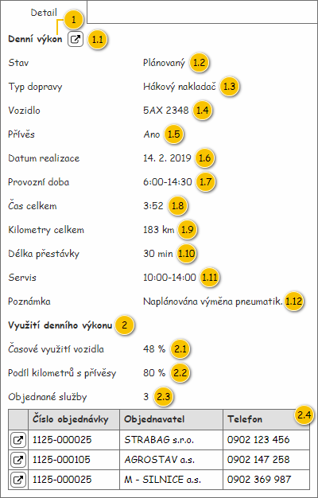

Nahrazeno: 200UI04: Detail denního výkonu – detail.
Panel slouží k zobrazení podrobných informací o Denním výkonu. Vstupem panelu jsou pak následující data:
Poznámka: Pokud na je vstupu předáno NULL, je v panelu zobrazen pouze zástupný text: Žádný denní výkon není vybrán.

| Callout | Komponenta | Nadpis | Typ komponenty | Příklad hodnoty | Hodnota | Výchozí hodnota | Formát | Zpřístupněná | Viditelná | Chování | Validace | Poznámka |
|---|---|---|---|---|---|---|---|---|---|---|---|---|
| 1 | Nadpis skupiny s informacemi o denním výkonu | – | Label | – | Denní výkon | – | – | – | Vždy | – | – | – |
| 1.1 | Odkaz na zobrazený denní výkon | – | Button
| – | – | – | – | Vždy | Vždy | Spustí 200UC02: Upravit denní výkon, na vstup UC jsou předány následující hodnoty:
| – | – |
| 1.2 | Stav | Stav | Label | Plánovaný | Entita Denní výkon. | – | – | Vždy | – | – | – | |
| 1.3 | Typ dopravy | Typ dopravy | Label | Hákový nakladač | Entita Typ dopravy – atribut Typ dopravy entity Denní výkon. | – | – | Vždy | – | – | – | |
| 1.4 | Vozidlo | Vozidlo | Label | 5AX 2348 | Entita Vozidlo – atribut Vozidlo entity Denní výkon. | – | – | Vždy | – | – | – | |
| 1.5 | Přívěs | Přívěs | Label | Ano | Entita Denní výkon. | – |
| – | Vždy | – | – | – |
| 1.6 | Datum realizace | Datum realizace | Label | 14. 2. 2019 | Entita Denní výkon. | – | – | Vždy | – | – | – | |
| 1.7 | Provozní doba | Provozní doba | Label | 6:00-14:30 | Entita Denní výkon. | – | – | Vždy | – | – | – | |
| 1.8 | Čas celkem | Čas celkem | Label | 3:52 | Entita Denní výkon. | – | – | Vždy | – | – | – | |
| 1.9 | Kilometry celkem | Kilometry celkem | Label | 183 km | Entita Denní výkon. | – | – | Vždy | – | – | – | |
| 1.10 | Délka přestávky | Délka přestávky | Label | 30 min | – | – | Vždy | – | – | – | ||
| 1.11 | Naplánované alokace na servis | Servis | Label | 10:00-14:00 | Entita Interval omezení denního výkonu – atribut Intervaly omezení entity Denní výkon.
| – | <Čas omezení od>-<Čas omezení do> Pokud je obsaženo více Intervalů omezení denního výkonu typu Alokace na servis, jsou jednotlivé Intervaly omezení denního výkonu odděleny čárkou.
Jednotlivé Intervaly omezení denního výkonu jsou pak řazeny vzestupně dle atributu Čas omezení od. Pokud se hodnoty tohoto atributu shodují, je následně řazeno dle atributu Čas omezení do. | – | Vždy | – | – | – |
| 1.12 | Poznámka | Poznámka | Label | Naplánována výměna pneumatik. | Entita Denní výkon. | – | – | Vždy | – | – | – | |
| 2 | Nadpis skupiny s informacemi o využití denního výkonu | – | Label | – | Využití denního výkonu | – | – | – | Vždy | – | – | U hodnot této skupiny jsou uvedeny konkrétní texty ToolTipu vysvětlující, jak byla konkrétní hodnota získána. |
| 2.1 | Časové využití vozidla | Časové využití vozidla | Label | 48,6 % | Entita Denní výkon. | – | <Časové využití> %
| – | Vždy | – | – | ToolTip hodnoty: Podíl předpokládané doby jízdy a pracovní doby. |
| 2.2 | Podíl kilometrů s přívěsy | Podíl kilometrů s přívěsy | Label | 80 % | Entita Denní výkon. | – |
| – | Vždy | – | – | ToolTip hodnoty: Podíl předpokládané ujeté vzdálenosti s přívěsem a celkové předpokládané ujeté vzdálenosti. |
| 2.3 | Objednané služby | Objednané služby | Label | 3 | Entita Denní výkon. | – | – | Vždy | – | – | ToolTip hodnoty: Počet naplánovaných objednaných služeb. | |
| 2.4 | Přehled objednávek obsloužených v rámci denního výkonu | – | Grid | – | Přehled objednávek | – | – | – | Pokud má uživatel následující oprávnění na typ entit:
Pokud je počet Objednaných služeb naplánovaných na Denní výkon větší než nula – atribut Počet objednaných služeb entity Denní výkon. | – | – | – |
Systém projde všechny Lokace objednané služby typu Časový interval a provede součet jejich délky trvání.
Poznámka: Algoritmus již počítá s aktualizovaným způsobem výpočtu trasy Denního výkonu. TODO: Po aktualizaci výpočtu trasy odebrat poznámku.
V tabulce jsou vloženy všechny Objednávky, z kterých vznikly Objednané služby, které jsou naplánovány na odpovídajícím Denním výkonu, a to následovně:
| Sloupec | Nadpis | Možnost editace | Komponenta | Datový typ | Příklad hodnoty | Hodnota | Výchozí hodnota | Formát | Možnosti sloupce | Zpřístupněný | Viditelný | Chování | Validace | Poznámka |
|---|---|---|---|---|---|---|---|---|---|---|---|---|---|---|
| Odkaz na objednávku | – | Ne | Button
| – | – | – | – | – | – | – | Pokud uživatel nemá potřebná oprávnění, není tabulka zobrazena vůbec. | Spustí 100UC03: Upravit objednávku, na vstup UC jsou předány následující hodnoty:
| – | – |
| Číslo objednávky | Číslo objednávky | Ne | TextBox | Text | 1125-000105 | Entita Objednávka. | – | <Číslo objednávky> | – | – | Vždy | – | – | – |
| Objednavatel | Objednavatel | Ne | TextBox | Text | AGROSTAV a.s. | Entita Zákazník – atribut Objednavatel entity Objednávka. | – | – | – | Vždy | – | – | – | |
| Telefon | Telefon | Ne | TextBox | Text | 0902 147 258 | Entita Objednávka. | – | – | – | Vždy | – | – | – |
| Odkaz | Stručný popis změny/doplnění |
|---|---|
| Přehled objednávek | Doplněn popis dostupných funkcí pro práci s jednotlivými sloupci. |
| Odkaz | Stručný popis změny/doplnění |
|---|---|
| Drátový diagram | Došlo ke zvýraznění tlačítek představující odkaz – není zobrazena pouze ikona, ale i tlačítka jako takové. |
| Odkaz | Stručný popis změny/doplnění |
|---|---|
| Přehled UI komponent | Doplněna informace o specifickém ToolTipu pro hodnoty skupiny s časovým využitím. |